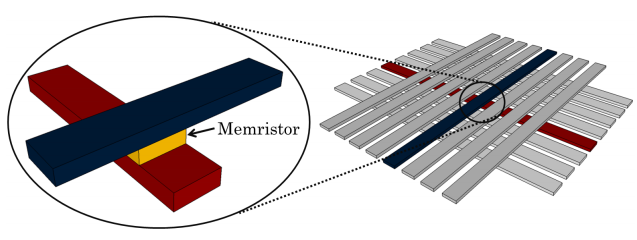
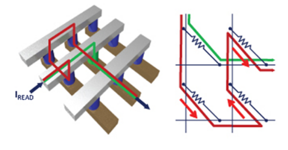
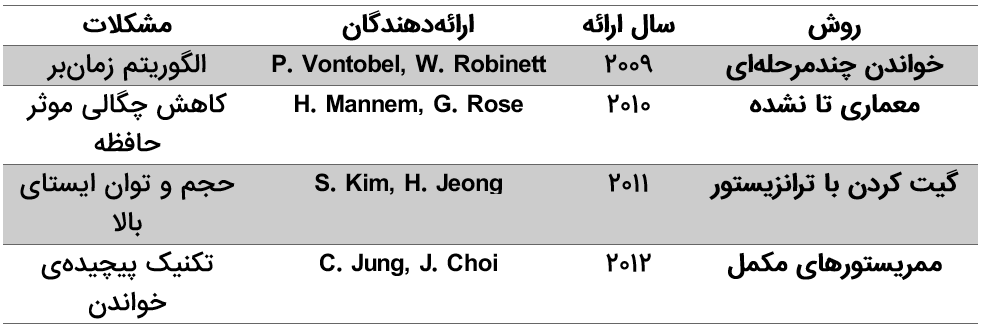
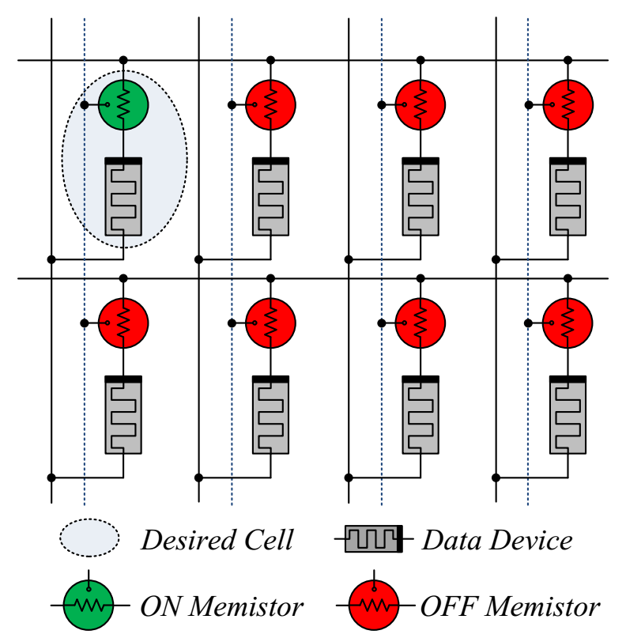
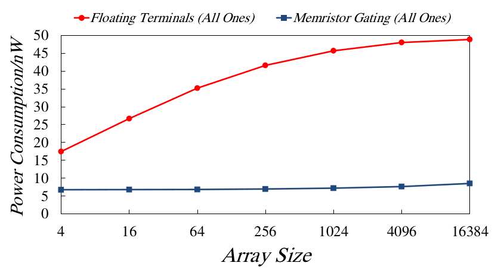
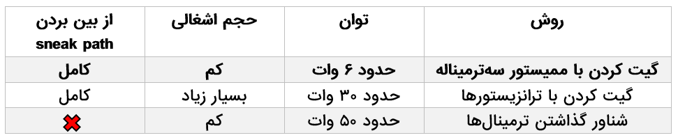
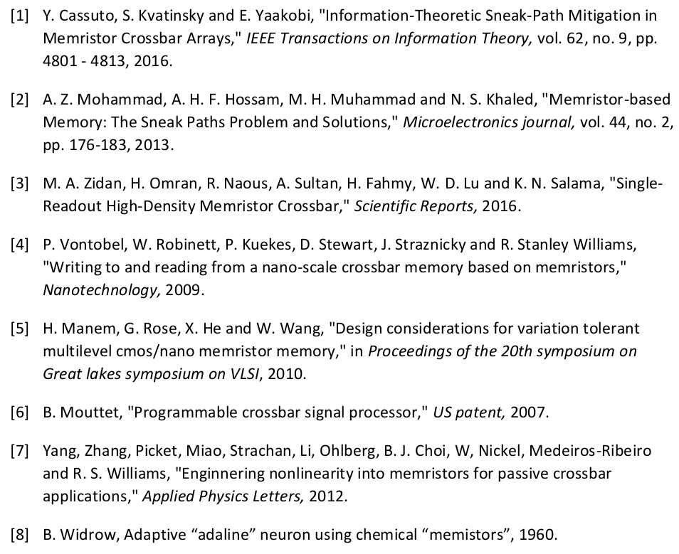

Your browser doesn't support the features required by impress.js, so you are presented with a simplified version of this presentation.
For the best experience please use the latest Chrome, Safari or Firefox browser.
ارائه روشی برای حل مشکل sneak path در ممریستورها
مانا پوستیزاده
دانشجوی کارشناسی مهندسی کامپیوتر-سختافزار
دانشگاه صنعتی امیرکبیر(پلیتکنیک تهران)
۱
ممریستورها
- ممریستور چیست؟
- مقاومتی با خاصیت حافظهای
- نحوهی استفاده
- خواندن دادهها با استفاده از مقدار مقاومت
- چگونه به عنوان یک حافظه استفاده میشود؟
- قرارگیری در آرایه
- چگالی بالا

شکل ۱
۲
sneak pathها
- منظور از Sneak-path چیست؟
- مجموعه ای از جریانهای ناخواسته
- دلیل به وجود آمدن این جریانها چیست؟
- عدم وجود گیتها
- این جریانها به محتوای حافظه بستگی دارند.
- حاشیه نویز را کوچکتر میکند.

شکل ۲
۳
کارهای گذشته:

جدول ۱
۴
اصول اولیه
- ممیستور چیست؟
- قطعهای با مزایای مقاومت و ترانزیستور با قابلیت کنترل مقدار مقاومت
- مزایا
- پایهی سومش نیازی به بایاس مستقیم ندارد.
- حفظ حالت باعث کاهش توان ایستا میشود.
۵
روش کار
از گیت کردن ممیستور و ممریستور استفاده میکنیم.
به ستونهای بیشتری برای برنامهریزی نیاز داریم.
همهی ممریستورها با جریان ناخواسته به حالت خاموش میروند.
۶

شکل ۳
۷
مزایای این روش
- مقاومت معادل بالا،حاشیه نویز بالا را نتیجه میدهد.
- جریانهای ناخواسته را به طور کامل از بین میبرد.
- عدم احتیاج به بایاس، توان ایستا را کاهش میدهد.
۸
آزمایش
آزمایشها در محیط Cadence Virtuso 6 انجام شده است.
هر آزمایش با اندازههای متفاوت آرایهها، دسته دادههای مختلف و معماریهای متنوعی انجام گرفته است.
۹

شکل ۴
۱۰

شکل ۵
۱۱
نتیجهگیری

جدول ۲
۱۲
منابع
